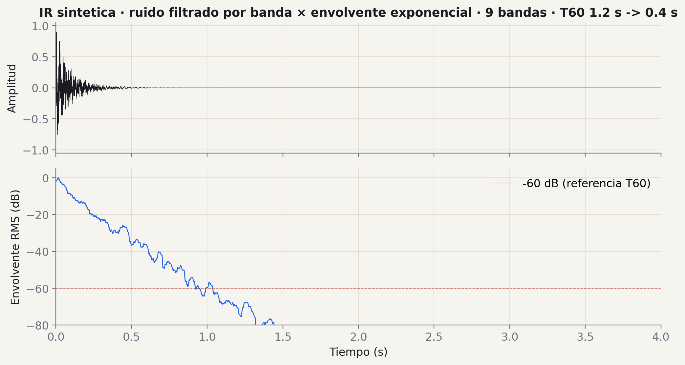
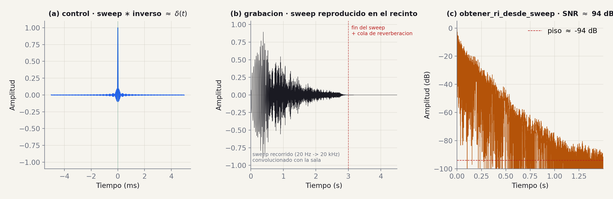
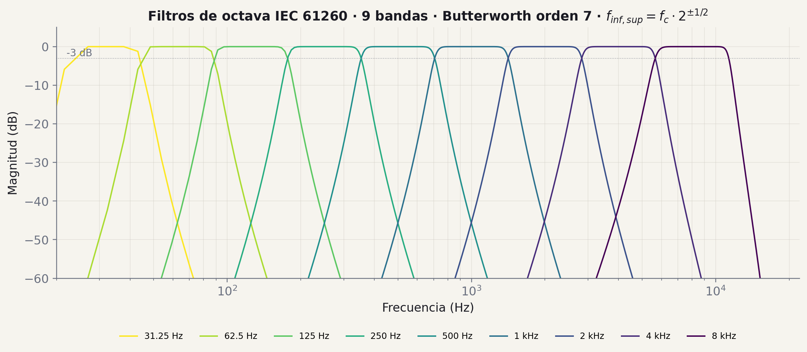
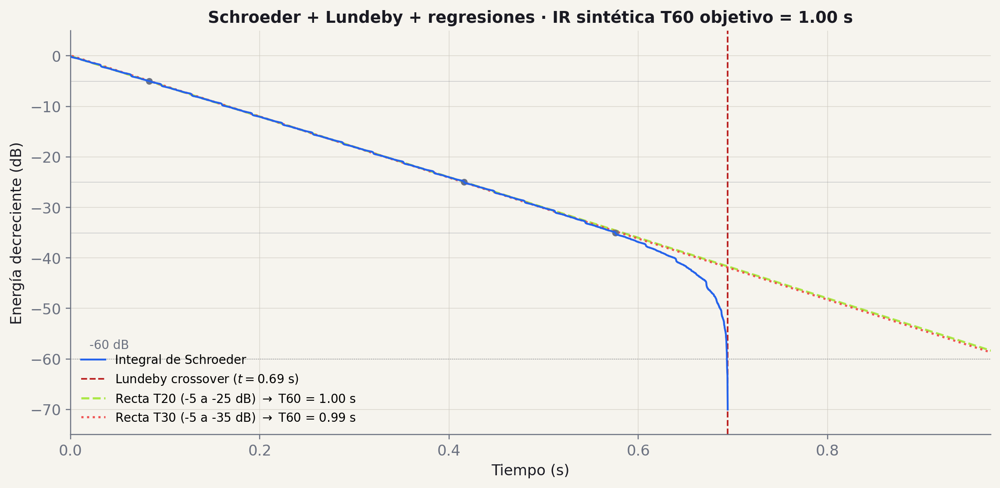
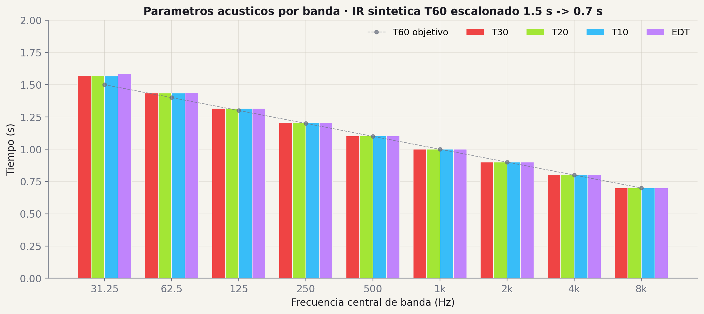

01/05 · función
cargar_audio
Carga WAV/FLAC.
in
ruta · str | Path
out
tuple[ndarray, int]
(señal, fs)
De la grabación al T60 por banda — el motor de cálculo del TP.
Penúltima entrega antes del producto final. Es la más densa del TP — cinco funciones que cierran el flujo de procesamiento.
| Milestone | Entregan | Fecha | Peso |
|---|---|---|---|
| M0 El Plano | Arquitectura · repo · issues | 28 Abr | 5% |
| M1 Generación | Ruido rosa · sine sweep · playrec | 19 May | 15% |
| M2 Procesamiento | Cargar · sintetizar RI · deconv · filtros · log | 16 Jun — próxima clase | 20% |
| M3 Producto | API REST · informe · demo | 7 Jul | 30% |
main, después del último PR mergeadogit checkout main && git pull origin main
git tag -a v0.2.0 -m "M2: cargar, sintetizar RI, deconv, filtros, log"
git push origin v0.2.0Mismo protocolo que M1. Sin el tag empujado, oficialmente no entregaron.
En M1 generaron las señales que excitan la sala. En M2 las usan para extraer la respuesta al impulso real y, sobre esa RI, calculan los parámetros acústicos por banda.
El flujo nuevo:
Clase 9 · Frecuencia y Filtros — FFT, ventanas, espectrogramas, Butterworth FIR/IIR, bandas IEC 61260. Es el fundamento de filtro_octava().
Clase 10 · Procesamiento de la RI — Transformada de Hilbert, envolvente, suavizado, integral de Schroeder, regresión por mínimos cuadrados. Es el puente al cálculo de T60 (que viene en M3).
Si esas dos clases las tienen frescas, M2 se resuelve casi por composición.
Spec completa en trabajo_practico/especificacion/m2_procesamiento.md. Cambian la firma y los tests dejan de pasar.
Cargar un WAV o FLAC y devolver (señal, fs) normalizado entre -1 y 1.
Detalles que no son obvios:
mean(axis=1))fs sale del header del archivo — nunca lo asumanPara la validación manual del informe van a usar IRs de OpenAIR (catálogo público). Vienen en variedad de sample rates (44.1, 48, 96 kHz) y resoluciones (16 o 24 bit).
Si su cargar_audio hace asunciones, se rompe en el primer archivo de ahí.
Recomendación: soundfile.read() (más robusto que scipy.io.wavfile) y siempre revisar signal.shape antes de usarla.

Una RI idealizada de un recinto se modela como un decaimiento exponencial modulado por ruido. Por banda: tomar ruido blanco, filtrar pasa-banda en la octava, y multiplicar por una envolvente $e^{-\alpha t}$ con $\alpha$ derivado del T60 objetivo:
$n_i(t)$ es ruido blanco filtrado por banda con Butterworth pasa-banda IEC 61260 ($f_c / \sqrt{2}$ a $f_c \cdot \sqrt{2}$). El factor $\alpha = 6{,}908 / T_{60}$ sale de pedir $20 \log_{10}(e^{-\alpha T_{60}}) = -60$ dB. Suma las 9 bandas y normaliza al pico. Tip: normalizar cada banda por su RMS antes de aplicar la envolvente — sin eso, las bandas más anchas (agudas) dominan la mezcla.
Spec · m2_procesamiento.md §2 — el caracter de "ruido decayente" se ve en el waveform; la envolvente RMS de la derecha cae linealmente en dB hasta cerca de $-60$ dB en $\approx T_{60}$ promedio.

obtener_ri_desde_sweep(grabacion, filtro_inverso)En el recinto tienen tres cosas: el sweep sintético que reproducen, el filtro inverso sintético del mismo sweep (que guardan, lo conocen porque lo generaron en M1), y la grabación que entra por el micrófono. La respuesta al impulso de la sala $h(t)$ no la conocen — es lo que quieren extraer.
Algebra del flujo: si $y(t) = x(t) * h(t)$ es la grabación, convolucionando con $x_{\text{inv}}$:
La firma de la spec es obtener_ri_desde_sweep(grabacion, filtro_inverso). Implementación: scipy.signal.fftconvolve(grabacion, filtro_inverso, mode='full'), ubicar el pico con np.argmax(np.abs(...)) y recortar la cola. fftconvolve es órdenes de magnitud más rápido que convolve para señales largas (la grabación típica son ~3-5 s a 48 kHz).
Spec · m2_procesamiento.md §3 — Farina (2000). Test: correlación cruzada con la RI original > 0.9. En el panel (b) la $h_\text{sala}$ está simulada con el modelo de la spec (ruido $\times$ envolvente) para poder mostrar el flujo completo sin grabar realmente.
Cuatro pasos. Cada uno se apoya en el anterior.
Asumimos linealidad e invariancia en el tiempo. Bajo esa hipótesis la sala queda caracterizada por una sola función: su respuesta al impulso $h(t)$. Para cualquier entrada $x(t)$:
Como $\delta * h = h$, si pudieras reproducir un impulso perfecto la grabación sería $h(t)$. El parlante no puede — $\delta$ tiene amplitud infinita. Una palmada se aproxima pero el SNR es malo en graves.
Generaste en M1 dos señales con esta propiedad (Farina 2000):
Cada frecuencia del sweep se apila en $t=0$ al convolucionar con su pareja invertida.
Reproducís $x$, grabás $y = x * h$. Convolucionás con $x_{\text{inv}}$ (que también conocés). Aplicando asociatividad:
El teorema de convolución dice que convolución en el tiempo $=$ multiplicación en frecuencia. La conmutatividad/asociatividad de la convolución vienen de las del producto de números complejos.
Aplicado a la cadena:
Inversa de Fourier → recuperás $h(t)$. La propiedad de Farina del sweep es exactamente que $X(f) \cdot X_{\text{inv}}(f) \approx 1$ en toda la banda útil.
| Qué tenés | De dónde sale |
|---|---|
x(t) · sweep |
M1 — generar_sine_sweep(inv=False) |
x_inv(t) · inverso |
M1 — generar_sine_sweep(inv=True) |
y(t) · grabación |
el micrófono en la sala |
h(t) · RI |
obtener_ri_desde_sweep(y, x_inv) |
Tres entradas conocidas, una salida deseada. La función de M2 es una sola línea: scipy.signal.fftconvolve(grabacion, filtro_inverso, mode='full') más ubicar el pico y recortar.
Material extendido: clase_11/extra/algebra_deconvolucion.md — derivación detallada de las propiedades, comparación con MLS, implementación paso a paso, referencias.

Norma IEC 61260: $f_\text{inf} = f_c \cdot 2^{-1/2}$, $f_\text{sup} = f_c \cdot 2^{1/2}$. 10 bandas estándar de octava (la última excede Nyquist a 44,1 kHz).
| banda | $f_c$ (Hz) | $f_\text{inf}$ - $f_\text{sup}$ (Hz) |
|---|---|---|
| 1 | 31,5 | 22,3 - 44,5 |
| 2 | 63 | 44,5 - 89,1 |
| 3 | 125 | 88,4 - 176,8 |
| 4 | 250 | 176,8 - 353,6 |
| 5 | 500 | 353,6 - 707,1 |
| 6 | 1 000 | 707,1 - 1 414,2 |
| 7 | 2 000 | 1 414,2 - 2 828,4 |
| 8 | 4 000 | 2 828,4 - 5 656,9 |
| 9 | 8 000 | 5 656,9 - 11 313,7 |
| 10 | 16 000 | 11 313,7 - 22 627,4 |
import numpy as np
import scipy.signal
def filtro_octava(signal, fc, fs, orden=4):
f_inf = fc / np.sqrt(2)
f_sup = fc * np.sqrt(2)
# frecuencias normalizadas a Nyquist
W_inf = 2 * f_inf / fs
W_sup = 2 * f_sup / fs
b, a = scipy.signal.butter(orden, [W_inf, W_sup], btype='band')
return scipy.signal.filtfilt(b, a, signal)
Para órdenes altos (>6) podés usar output='sos' + sosfiltfilt — más estable numéricamente.
filtfilt, no lfilterAplica el filtro forward + backward → fase cero. Crítico para parámetros temporales (EDT, T60). Sin esto, el retardo de grupo desplaza el inicio del decaimiento por banda y T60 en graves sale 5–15% inflado.
Convertir la amplitud a dB relativos al máximo es lo que permite ver el decaimiento real de la RI — en lineal, casi todo se ve "pegado a cero".
Detalles que no aparecen en la fórmula pero rompen la implementación:
np.finfo(float).eps (≈ $2{,}2 \times 10^{-16}$, la mínima resolución de float).import numpy as np
def a_escala_log(signal):
# 1. Reemplazar ceros para evitar log(0) = -inf
safe = np.where(signal == 0, np.finfo(float).eps, np.abs(signal))
# 2. Normalizar al maximo y convertir a dB
return 20 * np.log10(safe / np.max(safe))
La spec también acepta dejar los -np.inf resultantes sin reemplazar. Ambas opciones son válidas — la diferencia es solo cosmética en el plot.

Esta no es una función que pide M2 — pero es el siguiente paso natural: una vez que tienen la RI filtrada por banda y en escala log, lo que viene es medir el T60. Y eso requiere dos cosas que vieron en clase 10:
Integral de Schroeder · transforma la RI ruidosa en una curva monótona decreciente que es directamente la energía residual desde $t$ en adelante: $S(t) = \int_t^\infty h^2(\tau)\, d\tau$. Se calcula al revés con cumsum invertido. La pendiente de $10 \log_{10} S(t)$ es lo que se usa para extrapolar a -60 dB.
Método de Lundeby · detecta el punto de cruce entre el decaimiento real y el ruido de fondo. Sin esto, el T60 sale inflado por el ruido residual de la cola. En el plot, la línea roja vertical marca exactamente ese cutoff.
Clase 10 · M3 cierra el círculo: combinan Schroeder + Lundeby + regresión lineal para calcular T30/T20/T10/EDT por banda.

Este es el output final del análisis acústico, donde van a llegar en M3. Cuatro parámetros por banda según ISO 3382:
La paleta es la misma que van a ver en el frontend de cátedra cuando suban su WAV — continuidad visual entre deck, app y informe. T30 = T20 ≈ T10 ≈ EDT indica un decaimiento limpio (sala bien comportada). Si difieren mucho, la IR tiene reflexiones tempranas fuertes o ruido de fondo alto.
Spec ISO 3382 · M3 implementa el cálculo · M2 deja todo listo para ese cálculo (filtros por banda + escala log).
Una herramienta web para comparar sus resultados contra los de la cátedra en vivo.
https://rir-api-frontend.onrender.comSuben un WAV de una RI (la que sintetizaron con su sintetizar_ri, o una de OpenAIR) y la app calcula:
Ruido rosa, sine sweep + filtro inverso, RI sintética, convolución. Útil para generar la grabación de prueba si no tienen una sala disponible.
Captura directa desde el navegador con Web Audio API. Pueden grabar una palmada y obtener una RI cruda para procesar.
Tip M2: sinteticen una RI con T60 conocidos, súbanla al Analizador, comparen los valores que devuelve contra los que pusieron como entrada. Si difieren mucho, hay bug.
El contrato de M2 son los tests. Si pasan los 5, hay nota base. Si no, no.
Carga WAV válido sin romperse · acepta mono y estéreo · lanza error informativo si el formato es inválido.
Criterio: normalizado entre -1 y 1.
Sintetizar con T60=2.0 s @ 1 kHz, filtrar en 1 kHz, medir T60.
Criterio: error < 10% del objetivo.
Tomar M1 sweep + filtro inverso, simular grabación con RI sintética, recuperar RI.
Criterio: correlación cruzada con RI original > 0.9.
Probar respuesta en frecuencia del filtro.
Criterio: 0 dB ± 0.5 en fc · -3 dB ± 1 en $f_c \cdot 2^{\pm 1/2}$ · > 20 dB de atenuación a la octava.
Verifica que el máximo es 0 dB y que la amplitud mitad da -6 dB.
Criterio: exacto (tolerancia numérica).
La spec recomienda llegar a 80% de cobertura en M2. pytest --cov=app tests/ les da el reporte.
Tests automatizados son condición necesaria, no suficiente. La validación manual del informe pide:
Gráficas y screenshots en docs/m2/ del repo.
Y si quieren cerrar el círculo: suban la misma IR al frontend de cátedra y comparen.
Patrones aplicados en la API de cátedra. No los pide la rúbrica — pero les ahorran trabajo en M3 y mejoran la precisión numérica.
filtfilt para fase ceroUsen scipy.signal.sosfiltfilt, no sosfilt. Aplica el filtro forward y backward — sin desfasaje. Crítico para medir T60 correctamente.
fftconvolve para deconvoluciónCon señales largas, fftconvolve es órdenes de magnitud más rápido que convolve. Para una grabación de 10 s a 48 kHz, la diferencia es de segundos a horas.
cumsum(x[::-1]**2)[::-1] / sum(x**2)
Invertir, sumar acumulativo, normalizar, invertir de vuelta. Eso es todo.
Siempre np.log10(x + 1e-10) o np.clip(x, 1e-10, None). Evita -inf en los plots y los cálculos.
floatNo un array — el tiempo en segundos del cruce señal/ruido. Lo usan para truncar la RI antes de medir T60. Sin esto, el ruido infla el cálculo.
if signal.ndim > 1: signal = signal.mean(axis=1)
Resuelve OpenAIR y cualquier WAV interleaved en una línea. Lo hacen al inicio de cada función.
pytest -v en verde — los 5 tests + cobertura > 80%mainv0.2.0 anotado en main y empujado al remotedocs/m2/ con gráficas de validación manual (2+ IRs de OpenAIR)Ocho checks. Si están, presentan tranquilos.
M3 cierra el TP: API REST completa, endpoints expuestos como su propia versión de rir-api.onrender.com, informe técnico (Quarto), demo en vivo. La buena noticia: si M2 está bien, M3 es 70% wrap up — exponer las funciones que ya tienen como endpoints.